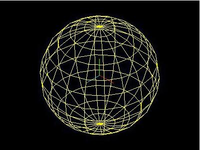
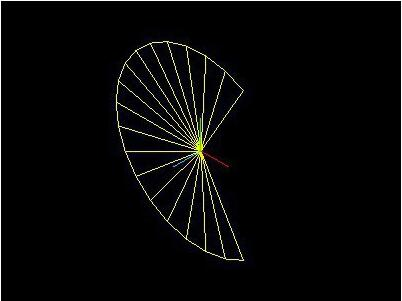
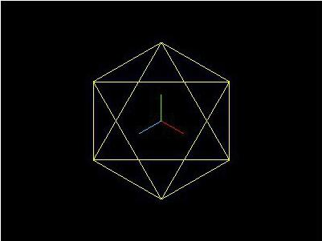
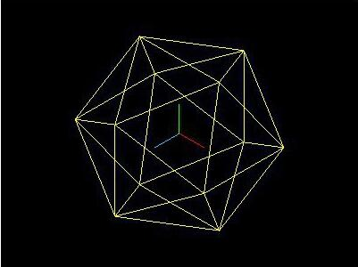
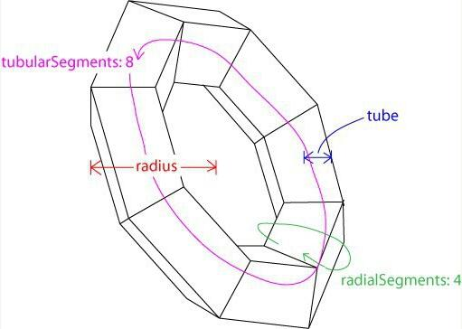
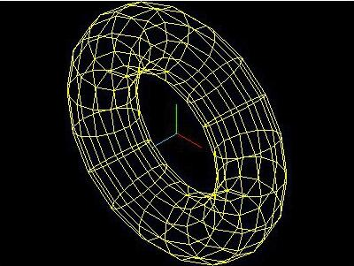
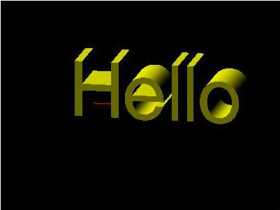

几何形状 Geometry
几何形状Geometry最主要的功能是存储物体的顶点信息
基本几何形状：
-
立方体 CubeGeometry(width, height, depth, widthSegments, heightSegments, depthSegments)

-
平面 PlaneGeometry(width, height, widthSegments, hightSegments)
这里的平面实际是一个长方形，而不是数学意义上无限大小的平面
如果需要创建的平面在x轴和z轴所在的平面内，可以通过物体的旋转来实现

-
球体 SphereGeometry(radius, segmentsWidth, segmentsHeight, phiStart, phiLength, thetaStart, thetaLength)
segmentsWidth相当于经度被切成了几瓣，segmentsHeight相当于纬度被切成了几层
在图形底层的实现中，并没有曲线的概念，曲线都是由多个折线近似构成的


-
圆形 CircleGeometry(radius, segments, thetaStart, thetaLength)

-
圆柱体 CylinderGeometry(radiusTop, radiusBottom, height, radiusSegments, heightSegments, openEnded)

-
正四面体 TetrahedronGeometry(radius, detail)

正八面体 OctahedronGeometry(radius, detail)

正十二面体 IcosahedronGeometry(radius, detail)

-
圆环 TorusGeometry(radius, tube, radialSegments, tubularSegments, arc)


-
圆环结 TorusKnotGeometry(radius, tube, radialSegments, tubularSegments, p, q, heightScale)

-
文字形状 TextGeometry(text, parameters)
使用文字形状需要下载和引用额外的字体库

改变材质和光照后达到的效果

-
自定义形状 Geometry()
自定义形状需要指定每个顶点的位置以及顶点连接情况
形状比较复杂的情况下，可以先在3ds Max之类的建模软件中创建模型，然后使用three.js导入到场景中
自定义梯台：